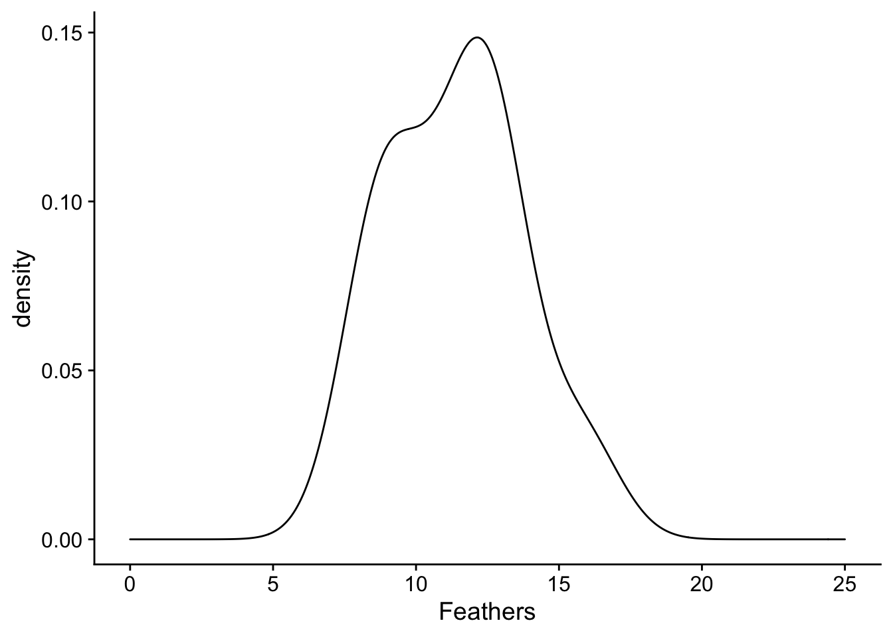
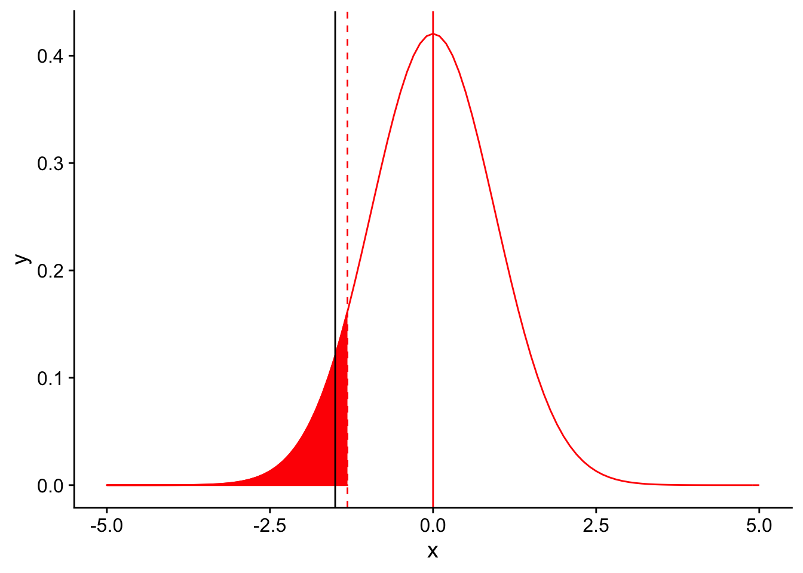
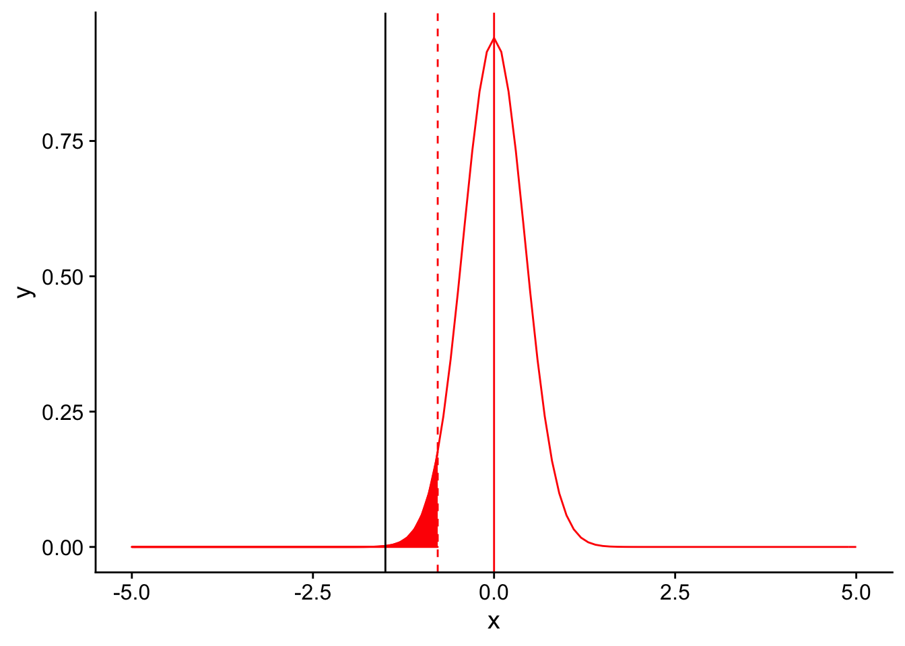
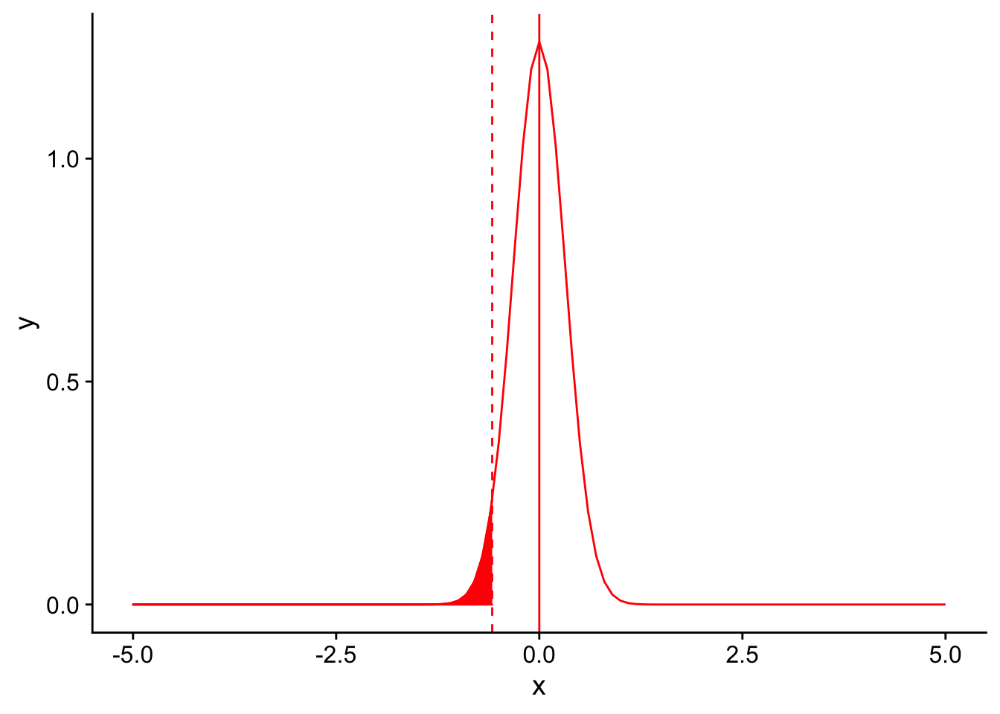

Power and Power Analysis
Anthony Hung
2019-05-02
- Introduction
- Reviewing the concept of Power
- Graphical depiction of power
- 5 factors that affect power:
- Introducing a scenario: Testing for difference in bird tail feather number
- Factors that affect power: 1. significance level (\(\alpha\))
- Factors that affect power: 2. Sample size (n)
- Factors that affect power: 3. Variance in the repsonse variable
- Factors that affect power: 4. Magnitude of the effect size
- Factors that affect power: 5. Type of test (one or two tailed)
- Performing a power analysis
- Power analysis using the “pwr” package in R.
- Summary
Last updated: 2020-06-23
Checks: 7 0
Knit directory: MSTPsummerstatistics/
This reproducible R Markdown analysis was created with workflowr (version 1.5.0). The Checks tab describes the reproducibility checks that were applied when the results were created. The Past versions tab lists the development history.
Great! Since the R Markdown file has been committed to the Git repository, you know the exact version of the code that produced these results.
Great job! The global environment was empty. Objects defined in the global environment can affect the analysis in your R Markdown file in unknown ways. For reproduciblity it’s best to always run the code in an empty environment.
The command set.seed(20180927) was run prior to running the code in the R Markdown file. Setting a seed ensures that any results that rely on randomness, e.g. subsampling or permutations, are reproducible.
Great job! Recording the operating system, R version, and package versions is critical for reproducibility.
Nice! There were no cached chunks for this analysis, so you can be confident that you successfully produced the results during this run.
Great job! Using relative paths to the files within your workflowr project makes it easier to run your code on other machines.
Great! You are using Git for version control. Tracking code development and connecting the code version to the results is critical for reproducibility. The version displayed above was the version of the Git repository at the time these results were generated.
Note that you need to be careful to ensure that all relevant files for the analysis have been committed to Git prior to generating the results (you can use wflow_publish or wflow_git_commit). workflowr only checks the R Markdown file, but you know if there are other scripts or data files that it depends on. Below is the status of the Git repository when the results were generated:
Ignored files:
Ignored: .DS_Store
Ignored: .RData
Ignored: .Rhistory
Ignored: .Rproj.user/
Ignored: analysis/.DS_Store
Ignored: analysis/.RData
Ignored: analysis/.Rhistory
Ignored: data/.DS_Store
Unstaged changes:
Modified: analysis/syllabus.Rmd
Note that any generated files, e.g. HTML, png, CSS, etc., are not included in this status report because it is ok for generated content to have uncommitted changes.
These are the previous versions of the R Markdown and HTML files. If you’ve configured a remote Git repository (see ?wflow_git_remote), click on the hyperlinks in the table below to view them.
| File | Version | Author | Date | Message |
|---|---|---|---|---|
| html | cdeb6c5 | Anthony Hung | 2020-06-22 | Build site. |
| html | 14c0094 | Anthony Hung | 2020-06-12 | Build site. |
| html | 1378fca | Anthony Hung | 2020-06-12 | Build site. |
| html | 9bb0ed6 | Anthony Hung | 2020-05-12 | Build site. |
| html | 2114e6c | Anthony Hung | 2020-05-10 | Build site. |
| html | 29c91df | Anthony Hung | 2020-05-10 | Build site. |
| html | a6d0787 | Anthony Hung | 2020-05-09 | Build site. |
| html | e18c369 | Anthony Hung | 2020-05-02 | Build site. |
| html | 0e6b6d0 | Anthony Hung | 2020-04-30 | Build site. |
| html | 5cbe42c | Anthony Hung | 2020-04-23 | Build site. |
| html | 4e08935 | Anthony Hung | 2020-03-30 | Build site. |
| html | f15db48 | Anthony Hung | 2020-03-30 | Build site. |
| html | 310d040 | Anthony Hung | 2020-02-20 | Build site. |
| Rmd | e02f5ce | Anthony Hung | 2020-02-20 | add dataviz |
| Rmd | e6a84ff | Anthony Hung | 2020-02-14 | correct typos |
| html | 96722bd | Anthony Hung | 2019-08-07 | Build site. |
| html | 15ca1f1 | Anthony Hung | 2019-07-18 | Build site. |
| Rmd | af6c4dc | Anthony Hung | 2019-07-18 | rephrase effect size definition |
| html | af6c4dc | Anthony Hung | 2019-07-18 | rephrase effect size definition |
| html | a3aa9e0 | Anthony Hung | 2019-07-18 | Build site. |
| Rmd | 3283a68 | Anthony Hung | 2019-07-18 | Edits for asethetic code/evaluation |
| html | ceb577e | Anthony Hung | 2019-07-12 | Build site. |
| Rmd | 6234571 | Anthony Hung | 2019-07-12 | commit changes |
| html | 6234571 | Anthony Hung | 2019-07-12 | commit changes |
| html | 397882b | Anthony Hung | 2019-05-30 | Build site. |
| html | 6d3e1c8 | Anthony Hung | 2019-05-28 | Build site. |
| html | c117ef1 | Anthony Hung | 2019-05-28 | Build site. |
| html | b291d24 | Anthony Hung | 2019-05-24 | Build site. |
| Rmd | a321d7b | Anthony Hung | 2019-05-24 | commit before republish |
| html | a321d7b | Anthony Hung | 2019-05-24 | commit before republish |
| html | c4bdfdc | Anthony Hung | 2019-05-22 | Build site. |
| Rmd | dd1e411 | Anthony Hung | 2019-05-22 | before republishing syllabus |
| html | dd1e411 | Anthony Hung | 2019-05-22 | before republishing syllabus |
| html | 4ce8e85 | Anthony Hung | 2019-05-21 | bandersnatch add |
| html | 096760a | Anthony Hung | 2019-05-19 | Build site. |
| html | da98ae8 | Anthony Hung | 2019-05-18 | Build site. |
| Rmd | 239723e | Anthony Hung | 2019-05-08 | Update learning objectives |
| html | 2ec7944 | Anthony Hung | 2019-05-06 | Build site. |
| html | d45dca4 | Anthony Hung | 2019-05-06 | Republish |
| Rmd | ee75486 | Anthony Hung | 2019-05-05 | Build site. |
Introduction
Before going to the lab to carry out any type of full-scale experiment, it is important to determine how many samples and replicates you will need to include in the experiment to best answer the question you would like to answer. Power analyses allow researchers to determine the smallest sample size required to detect the effect size of a given comparison at a given significance level.
Performing a power analysis before carrying out an experiment has many benefits, among them including:
Avoiding wasting reagents, animals, or precious samples through an improperly designed experiment that includes more replicates or larger sample sizes than was required.
Avoiding performing an invalid study that does not have sufficient power to detect a difference of interest.
Remaining ethical in our conduct of science through avoiding p-hacking by predetermining the number of replicates to perform or number of samples to collect.
Performing a power analysis after running an experiment is also useful, particularly in the case of a negative result. A question to motivate why it is useful to perform power analyses even after a study is complete, you can ask yourself: “if I performed an experiment and did not detect a statistically significant result, does it necessarily mean that the null hypothesis you were testing is true”?
Our objectives today are to review the concept of power, discuss what a power analysis is, and different ways to carry out a power analysis.
Today, we will first review power as a concept. Then, we will discuss some parameters that need to be kept in mind when trying to estimate power. Finally, we will walk through the steps of performing power analyses and the list of assumptions need to make in order to perform one.
Reviewing the concept of Power
Recall that there are four possible scenarios when performing a hypothesis test on a null hypothesis. We have previously discussed in some detail the concept of Type 1 and Type 2 errors, which will occur with some probability in any type of test that you will perform.
| \(H_0\) is True | \(H_0\) is False | |
|---|---|---|
| reject \(H_0\) | P(Type 1 error) = \(\alpha\) | P(True Positive) = Power = \(1- \beta\) |
| fail to reject \(H_0\) | P(True Negative) = \(1-\alpha\) | P(Type 2 error) = \(\beta\) |
Power can be thought of as the probability of rejecting the null hypothesis given that the null hypothesis is false (the probability of correctly rejecting the null hypothesis). It is also 1-\(\beta\), the probability of making a type 2 error. Since power is a probability, it takes on values between 0 and 1.
Graphical depiction of power
What does it mean that power is the probability of correctly rejecting the null hypothesis? In addition to visualizing it in a table, we can graphically depict what we mean by \(\alpha\), power, and \(\beta\).
Suppose we have two competing hypotheses to consider: a null hypothesis that the mean surface area of chips in a bag is 10 \(cm^2\) and an alternative hypothesis that the mean surface area of the chips in the bag is 15 \(cm^2\). You take some samples from the bag and would like to determine which hypothesis better fits the data. Due to sampling error, the null and alternative sampling distributions will have some spread around their mean values. Here we plot the null sampling distribution in blue and the alternative sampling distribution in red:
library(tidyverse)
library(ggplot2)
library(cowplot)
theme_set(theme_cowplot())
library(gridExtra)
power_visualization <- ggplot(data = data.frame(x = c(0, 25)), aes(x)) +
stat_function(fun = dnorm, args = list(mean = 15, sd = 2), color = "red", linetype = "solid") +
stat_function(fun = dnorm, args = list(mean = 10, sd = 2), color = "blue", linetype = "solid")
power_visualization
We would like to perform a one-tailed T-test to determine if there is sufficient evidence in our data to support rejecting the null hypothesis in favor of the alternative. Let us use an \(\alpha = 0.05\) and plot the significance threshold on the null distribution:
power_visualization + geom_vline(xintercept=1.645*2+10, linetype = "dashed", color = "black")
Observed means to the right of this threshold would be declared as significant. Now, there are two possible realities: either the null hypothesis (\(H_0\)) is indeed True, or \(H_0\) is False (see the table above). Let’s first transport ourselves to the reality where the null hypothesis is True.
\(H_0\) is True
If \(H_0\) is true, then looking at the table we created earlier we know that there are two possible results of our hypothesis test. If the results of the test are that we reject \(H_0\), then we have committed a type 1 error (false positive). If the results of the test are that we do not reject \(H_0\), then we have a true negative result.
Since we exist in the reality where the null hypothesis is true, we should only focus on the blue curve (the null sampling distribution).
H0true <- ggplot(data = data.frame(x = c(0, 25)), aes(x)) +
stat_function(fun = dnorm, args = list(mean = 15, sd = 2), color = "red", linetype = "solid", alpha = 0.2)+
stat_function(fun = dnorm, args = list(mean = 10, sd = 2), color = "blue", linetype = "solid") +
stat_function(fun = dnorm, args = list(mean = 10, sd = 2), color = "blue", linetype = "solid", xlim = c(0,1.645*2+10), geom = "area", fill = "yellow", alpha = 0.5) +
stat_function(fun = dnorm, args = list(mean = 10, sd = 2), color = "blue", linetype = "solid", xlim = c(1.645*2+10, 25), geom = "area", fill = "green", alpha = 0.5) +
geom_vline(xintercept=1.645*2+10, linetype = "dashed", color = "black")
H0true
The area under the null distribution curve to the right of the significance threshold in green is the probability of falsely rejecting the null hypothesis given that the null hypothesis is true (\(\alpha\)). Therefore, the area under the curve to the right of the black line is 5% of the total area under the blue curve. Since the total area under the blue curve must add up to 100%, the remaining area to the left of the black line in yellow is 95%, or the probability of a true negative given the null hypothesis is true.
Now, let’s transport ourselves instead to the world where the null hypothesis is False and the alternative hypothesis is true.
\(H_0\) is False
If \(H_0\) is False, then looking at the table we created earlier we know that there are two possible results of our hypothesis test. If the results of the test are that we reject \(H_0\), then we have a true positive result. If the results of the test are that we do not reject \(H_0\), then we have a type 2 error (False negative).
Since we exist in the reality where the null hypothesis is false, we should only focus on the red curve (the alternative sampling distribution).
H0false <- ggplot(data = data.frame(x = c(0, 25)), aes(x)) +
stat_function(fun = dnorm, args = list(mean = 15, sd = 2), color = "red", linetype = "solid")+
stat_function(fun = dnorm, args = list(mean = 10, sd = 2), color = "blue", linetype = "solid", alpha = 0.2) +
stat_function(fun = dnorm, args = list(mean = 15, sd = 2), color = "blue", linetype = "solid", xlim = c(0,1.645*2+10), geom = "area", fill = "orange", alpha = 0.5) +
stat_function(fun = dnorm, args = list(mean = 15, sd = 2), color = "blue", linetype = "solid", xlim = c(1.645*2+10, 25), geom = "area", fill = "purple", alpha = 0.5) +
geom_vline(xintercept=1.645*2+10, linetype = "dashed", color = "black")
H0false
The area under the alternative distribution curve to the left of the significance threshold in orange is the probability of incorrectly not rejecting the null hypothesis given that the null hypothesis is false (False negative, type 2 error). What value should the area under the curve to the left of the black line be?
5 factors that affect power:
There are 5 factors that primarily affect power:
Significance level (\(\alpha\))
Sample size (n)
Variance in the response variable
Magnitude of the effect size
Type of test (one or two tailed)
Let’s figure out intuitively why each of these quantities matters when we’re thinking about power.
Introducing a scenario: Testing for difference in bird tail feather number
For an example, assume that we are experimenters that are sampling the birds in a forest to see if they have fewer tail feathers than the known species-wide average number of 12.5. Unknown to us, the population mean of tail feathers in this forest is in fact 11, which is less than 12.5. We go out one day and collect 10 birds from the forest and count their number of tail feathers and plot their distribution:
set.seed(1)
feather_data <-
data.frame(
Feathers = c(rnorm(10, mean = 11, sd = 3))
)
plot <- ggplot(data = feather_data, aes(x = Feathers)) + geom_density() + xlim(0, 25)
plot
What we can appreciate from the plot is that the distribution of number of feathers of sampled birds is shifted down from 12.5. We can see this through comparing the mean of the distribution (in the black solid line) with 12.5 (in the red dashed line). The spread of our sample distribution is fairly broad, with a standard deviation of 3.
plot + geom_vline(xintercept=12.5, linetype = "dashed", color = "red") + geom_vline(xintercept=mean(feather_data$Feathers), linetype = "solid", color = "black")
Since we see a difference in the mean of our collected birds from 12.5, we would like to perform a statistical test to determine if this difference is statistically significant. What test should be perform?
First, start out by plotting the null sampling distribution of feather number (assuming that the variance of feather number in the species known and is equal to the variance in our collected sample). Here it is in red:
nextplot <- ggplot(data = data.frame(x = c(-5, 5)), aes(x)) + stat_function(fun = dnorm, args = list(mean = 0, sd = 3/sqrt(10)), color = "red", linetype = "solid") +
geom_vline(xintercept=0, linetype = "solid", color ="red")
nextplot
What important theorem gives us the expected shape and center of our sampling distribution?
Recall that in order for a result to be signficant under a one-tailed T-test, the observation should be at a percentile less than or equal to our significance level \(\alpha\). Let’s draw the 5th percentile on the null distribution using a dashed red line to denote our significance level for the test (\(\alpha = 0.04\)). Everything to the left of this dotted line would be declared as significant.
threshold <- (-1.833*3/sqrt(10))
nextplot + geom_vline(xintercept=threshold, linetype = "dashed", color ="red") + stat_function(fun = dnorm, args = list(mean = 0, sd = 3/sqrt(10)), color = "red", linetype = "solid", xlim = c(-5,threshold), geom = "area", fill = "red")
Where does our sample mean fall on this null distribution?
threshold <- (-1.833*3/sqrt(10))
nextplot + geom_vline(xintercept=threshold, linetype = "dashed", color ="red") + stat_function(fun = dnorm, args = list(mean = 0, sd = 3/sqrt(10)), color = "red", linetype = "solid", xlim = c(-5,threshold), geom = "area", fill = "red") + geom_vline(xintercept = -1.5)
Oof! It looks like our sample mean is higher than the threshold for significance for our T-test, meaning we did not detect a signficant difference between our sample and the known species average. How could this be, given that the true population mean was indeed lower than the species mean?
Let us see what effect changing each of the 5 parameters we discussed earlier would have on our ability to correctly detect the true difference in the tail feather number. Note that this is simply an educational example: in a real experiment you obviously would not and should not have the ability to play with parameters of your sample and statistical test after you have collected data.
Factors that affect power: 1. significance level (\(\alpha\))
In order for our T-test to be significant, the observed mean for our sample must be lower than the threshold set by applying our significance level to the null distribution (in red). One way we could imagine that would put our black line (sample mean) to the left of the threshold would be to simply move the red line to the right. This is equivalent to setting a higher value of \(\alpha\). For example, what if in our test we chose to use an \(\alpha = 0.10\)?
threshold <- (-1.383*3/sqrt(10))
nextplot + geom_vline(xintercept=threshold, linetype = "dashed", color ="red") + stat_function(fun = dnorm, args = list(mean = 0, sd = 3/sqrt(10)), color = "red", linetype = "solid", xlim = c(-5,threshold), geom = "area", fill = "red") + geom_vline(xintercept = -1.5)
At a significance level of 0.10, our test is signficant! We detect a difference between our population’s mean tail number when compared to the species mean tail number at a signficance level of 0.10. Increasing \(\alpha\) gives us more power. It’s almost too good to be true. Why might it be inadvisable to simply use a high value of \(\alpha\) when performing statistical tests in order to obtain high power?
Factors that affect power: 2. Sample size (n)
Instead of relaxing our significance threshold, what if we collected more birds in our sample (keeping everything else, including the mean feather number, constant)? For example, let’s assume we collected 50 birds instead of 10. What will this do to the shape of our null sampling distribution?
Let’s plot the null sampling distribution for a sample size of 50 and draw a dotted line for the threshold for significance under an \(\alpha = 0.05\).
nextplot <- ggplot(data = data.frame(x = c(-5, 5)), aes(x)) + stat_function(fun = dnorm, args = list(mean = 0, sd = 3/sqrt(50)), color = "red", linetype = "solid") +
geom_vline(xintercept=0, linetype = "solid", color ="red")
threshold <- (-1.833*3/sqrt(50))
nextplot + geom_vline(xintercept=threshold, linetype = "dashed", color ="red") + stat_function(fun = dnorm, args = list(mean = 0, sd = 3/sqrt(50)), color = "red", linetype = "solid", xlim = c(-5,threshold), geom = "area", fill = "red")
Where does our observed difference in mean tail feather number (11 - 12.5) fall on this null distribution?
nextplot <- ggplot(data = data.frame(x = c(-5, 5)), aes(x)) + stat_function(fun = dnorm, args = list(mean = 0, sd = 3/sqrt(50)), color = "red", linetype = "solid") +
geom_vline(xintercept=0, linetype = "solid", color ="red")
threshold <- (-1.833*3/sqrt(50))
nextplot + geom_vline(xintercept=threshold, linetype = "dashed", color ="red") + stat_function(fun = dnorm, args = list(mean = 0, sd = 3/sqrt(50)), color = "red", linetype = "solid", xlim = c(-5,threshold), geom = "area", fill = "red") + geom_vline(xintercept = -1.5)
It’s far to the left of the threshold. Therefore, we would conclude that there our observed mean number of tail feathers is significantly different from 12.5. Increasing the sample size gives us increased power to detect a difference, primarily through causing the sampling distribution to be narrower (i.e. we are more confident in our estimate of the population mean using the mean of our sample).
Factors that affect power: 3. Variance in the repsonse variable
In a similar vein, let’s assume that instead of our sample size increasing, the variance in our sample distribution was lower. Recall that our sample distribution had a standard deviation of 3. What is it’s variance?
If our sample distribution’s sample size was 10 and it’s variance was 1 instead of \(\sqrt{3}\), our null sampling distirbution with an \(\alpha = 0.05\) would look like this:
nextplot <- ggplot(data = data.frame(x = c(-5, 5)), aes(x)) + stat_function(fun = dnorm, args = list(mean = 0, sd = 1/sqrt(10)), color = "red", linetype = "solid") +
geom_vline(xintercept=0, linetype = "solid", color ="red")
threshold <- (-1.833*1/sqrt(10))
nextplot + geom_vline(xintercept=threshold, linetype = "dashed", color ="red") + stat_function(fun = dnorm, args = list(mean = 0, sd = 1/sqrt(10)), color = "red", linetype = "solid", xlim = c(-5,threshold), geom = "area", fill = "red") 
Once again, you can appreciate that the sampling distribution is narrower. Let’s see where our observed mean falls on the distribution:
nextplot <- ggplot(data = data.frame(x = c(-5, 5)), aes(x)) + stat_function(fun = dnorm, args = list(mean = 0, sd = 1/sqrt(10)), color = "red", linetype = "solid") +
geom_vline(xintercept=0, linetype = "solid", color ="red")
threshold <- (-1.833*1/sqrt(10))
nextplot + geom_vline(xintercept=threshold, linetype = "dashed", color ="red") + stat_function(fun = dnorm, args = list(mean = 0, sd = 1/sqrt(10)), color = "red", linetype = "solid", xlim = c(-5,threshold), geom = "area", fill = "red") + geom_vline(xintercept = -1.5)
Again, the observed mean is significantly lower than 12.5. A reduced variance increases power in the same way that increased sample sizes do, through narrowing the sampling distribution.
Factors that affect power: 4. Magnitude of the effect size
Returning to our base example, let’s assume that instead of an average tail feather number of 11, we had found an average of 10 tail feathers per bird in our sample (with the same standard deviation of 3 for our sample). This would mean that our effect size (the difference between our observation mean and the null distribution’s mean) would increase from \(\frac{11-12.5}{\frac{3}{\sqrt{10}}} = -1.5\) to \(10-12.5 = -2.5\). The effect size is the deviation of an observation from the null hypothesis (scaled by the standard deviation). Plotting this difference on the null sampling distribution:
nextplot <- ggplot(data = data.frame(x = c(-5, 5)), aes(x)) + stat_function(fun = dnorm, args = list(mean = 0, sd = 3/sqrt(10)), color = "red", linetype = "solid") +
geom_vline(xintercept=0, linetype = "solid", color ="red")
threshold <- (-1.833*3/sqrt(10))
nextplot + geom_vline(xintercept=threshold, linetype = "dashed", color ="red") + stat_function(fun = dnorm, args = list(mean = 0, sd = 3/sqrt(10)), color = "red", linetype = "solid", xlim = c(-5,threshold), geom = "area", fill = "red") + geom_vline(xintercept = -2.5)
we see that the result is significant. Rather than moving the significance threshold, increasing the magnitude of the effect size moves the black line to the left, increasing the power to detect the difference.
Factors that affect power: 5. Type of test (one or two tailed)
Finally, one easily overlooked aspect of a test that can affect power is whether a test is one or two tailed. Of course, not all statistical tests will have an option of a one or two tailed option. What is an example of a test that is always two-tailed?
Let’s compare the significance thresholds on the null distribution for a one (red) and two (blue) tailed test
nextplot <- ggplot(data = data.frame(x = c(-5, 5)), aes(x)) + stat_function(fun = dnorm, args = list(mean = 0, sd = 3/sqrt(10)), color = "red", linetype = "solid") +
geom_vline(xintercept=0, linetype = "solid", color ="red")
threshold <- (-1.833*3/sqrt(10))
redplot <- nextplot + geom_vline(xintercept=threshold, linetype = "dashed", color ="red") +
stat_function(fun = dnorm, args = list(mean = 0, sd = 3/sqrt(10)), color = "red", linetype = "solid", xlim = c(-5,threshold), geom = "area", fill = "red")
blueplot <- nextplot + geom_vline(xintercept=(2.262157*3/sqrt(10)), linetype = "dashed", color ="blue") +
geom_vline(xintercept=(-2.262157*3/sqrt(10)), linetype = "dashed", color ="blue") +
stat_function(fun = dnorm, args = list(mean = 0, sd = 3/sqrt(10)), color = "blue", linetype = "solid", xlim = c((2.262157*3/sqrt(10)),5), geom = "area", fill = "blue") +
stat_function(fun = dnorm, args = list(mean = 0, sd = 3/sqrt(10)), color = "blue", linetype = "solid", xlim = c(-5,(-2.262157*3/sqrt(10))), geom = "area", fill = "blue")
grid.arrange(redplot, blueplot, ncol = 2)
Comparing the two, you can see that the threshold for significance for a two-tailed test is more extreme on the left side than for a one-tailed test. This is because for a two tailed test, you would be testing for any type of difference between an observed mean and the null mean (significantly greater or significantly smaller). The shaded portions of the two distributions have the same total area (which is equal to \(\alpha\)), which means that there is less shaded area on the left side of the graph (half as much as in a one-tailed test). Therefore, a one-tailed test will have more power to detect a one-directional difference than a two-tailed test. However, one-tailed tests are only appropriate to use in cases where there is an a priori reason to expect that the observed quantity will be less than (or greater than) the null value.
Performing a power analysis
Now that we have walked through how many different aspects of a statistical test can affect power, we can move on to discussing how to perform a power analysis. Note that the specific details of a power analysis will differ depending on the specific statistical test you plan to perform.
Two important types of power analyses you can carry out while designing an experiment are a priori analyses and sensitivity analyses.
- A priori: compute sample size required to achieve a desired power, given \(\alpha\), effect size, and type of test.
The a priori power analysis tells you what sample size is needed to detect a certain effect size. This is useful when you have a good idea of what range of effect size would be useful or of good clinical utility to detect. For example, if you are comparing the effectiveness of two drugs in stopping hair loss and one is 100 times more expensive than the other, you may not be as interested in determining if one is 0.01% more effective than the other.
- Sensitivity: compute the effect size that could be detected by a test, given \(\alpha\), power, sample size, and type of test
A sensitivity power analysis is used when you as a researcher have no control over the sample size of the study (for example, there is not enough funding to process more than X samples). Instead, this analysis determines what effect size you could detect with the subjects you have. This is referred to as the minimal detectable effect (MDE) of your study.
Let us walk through an example of performing a power analysis to determine a sample size. We will move forward by revisiting our previous experiment of trying to determine the true mean number of tail feathers of birds in a given forest. Suppose again that the known species-wide average number is 12.5 with a standard deviation of 3 and the the population mean of tail feathers in this forest is in fact 11, which is less than 12.5. How many birds must we collect from the forest to have a power of 0.80 to detect the difference using a one-tailed T-test at an \(\alpha =0.05\)?
From the statement of the problem, we already know a few of the factors that we need to know in order to perform the power analysis. If we did not have these, we would need to estimate or make assumptions about them before moving forward.
| Factor | Value | |
|---|---|---|
| Significance level | 0.05 | |
| Sample size | ? | |
| Variance | \(\sqrt{3}\) | |
| Effect size | \(11-12.5=-1.5\) | |
| Type of test | one-tailed | |
| Power | 0.80 |
First, we start with our significance level of 0.05. Given that we are performing a one-tailed T-test for a single mean, we can figure out the T statistic threshold (“critical value”) for obtaining a significant result. We can do this in R using the command ‘qt(0.05, df = 9)’.
qt(0.05, df = 9)[1] -1.833113Recall that the equation for a T-statistic is given by:
\[T = \frac{\mu_{observed}-\mu_0}{\sqrt{\frac{\sigma^2}{n}}}\]
Recall also that the definition of power is the area shaded in purple in this plot
ggplot(data = data.frame(x = c(0, 25)), aes(x)) +
stat_function(fun = dnorm, args = list(mean = 15, sd = 2), color = "red", linetype = "solid")+
stat_function(fun = dnorm, args = list(mean = 10, sd = 2), color = "blue", linetype = "solid") +
stat_function(fun = dnorm, args = list(mean = 15, sd = 2), color = "blue", linetype = "solid", xlim = c(1.645*2+10, 25), geom = "area", fill = "purple", alpha = 0.5) +
geom_vline(xintercept=1.645*2+10, linetype = "dashed", color = "black") +
geom_vline(xintercept=10, linetype = "dashed", color = "blue", alpha = 0.5) +
geom_vline(xintercept=15, linetype = "dashed", color = "red", alpha = 0.5)
The next step is important but may be difficult to conceptualize. In order for the purple area to be equal to our power of 0.80, we need the “distance” (in standard error units) between the mean of the alternative distribution and the significance level to be equal to the T statistic corresponding to the 20th percentile. Why does this make sense? Because the purple shaded area is defined as the area to the right of the significance level in the alternative distribution. The area to the right of the 20th percentile makes up 80% of the total area (0.80). Great! So we know our goal. How do we set our sample size to get to that goal?
To start, we can take advantage of another measurement we have: the effect size. This is the difference between the mean of the null distribution and the alternative distribution. This is a great measuring stick to have because it is set: it will not change depending on the sample size, whereas the standard error of each distribution depends on n, which is the very quantity we are trying to estimate!
In short, we need our effect size (scaled by standard error units) to equal the sum of the distance between the blue dotted line and the black dotted line and the distance between the black dotted line and the red dotted line (in standard error units). The distance between the mean of each distribution and another point scaled by standard error units is another way to phrase a T statistic. In other words:
\[\frac{ES}{\frac{\sigma^2}{\sqrt{n}}} = T_{1-\alpha} + T_{1-\beta}\]
\(T_{1-\alpha}\) is the T statistic representing the distance between the blue dotted line and the black dotted line scaled in standard error units, while \(T_{1-\beta}\) is the T statistic representing the distance between the black dotted line and the red dotted line scaled in standard error units. Rearranging to obtain an equation to solve for n, we get:
\[n= (\frac{T_{1-\alpha} + T_{1-\beta}}{\frac{ES}{\sigma^2}})^2\]
Plugging in our known values (and looking up the T statistics using R using the qt() function), we can get the sample size required to obtain a power of 0.80.
qt(0.95, df = 26)[1] 1.705618qt(0.8, df = 26)[1] 0.8556652\[n = (\frac{1.833113+0.8834039}{\frac{1.5}{3}})^2 = 26.24069 \approx 27\]
We need a sample size of at least 27 birds to obtain our desired power.
Power analysis using the “pwr” package in R.
The “pwr” package contains many useful functions to perform power calculations for a variety of statistical tests.
#install.packages("pwr")
library(pwr)
pwr.t.test(n = NULL, d = abs(-1.5/3), sig.level = 0.05, power = 0.8, type = c("one.sample"), alternative = c("greater"))
One-sample t test power calculation
n = 26.13753
d = 0.5
sig.level = 0.05
power = 0.8
alternative = greaterUsing this package, one can also create power graphs to see how varying one experimental parameter or another will affect the power of your experiment.
# plot sample sizes needed to obtain desired level of power for a variety of effect sizes
# range of effect sizes
ES <- seq(0.3, 5, .01)
nES <- length(ES)
# range of power values
power <- seq(.5,.8,0.1)
npower <- length(power)
# obtain sample sizes
samsize <- data.frame()
for (i in 1:npower){
for (j in 1:nES){
result <- pwr.t.test(n = NULL,
d = abs(ES[j]/3),
sig.level = 0.05,
power = power[i],
type = c("one.sample"),
alternative = c("greater"))
samsize[j,i] <- ceiling(result$n)
}
}
rownames(samsize) <- ES
samsize <- cbind(rownames(samsize), data.frame(samsize, row.names=NULL))
colnames(samsize) <- c("Effect Size",power)
# convert powers dataframe into "long" format to facilitate plotting
powers_long <- gather(samsize, key = "power", value ="n", `0.5`:`0.8`)
powers_long <- mutate_all(powers_long, function(x) as.numeric(as.character(x)))
powers_long$power <- as.factor(powers_long$power)
ggplot(powers_long) +
geom_smooth(aes(x = `Effect Size`, y = `n`, col = power)) +
ggtitle("Power graph for one-tailed T test \n with one mean") +
xlab("Effect Size") +
scale_y_log10()`geom_smooth()` using method = 'loess' and formula 'y ~ x'
Note that the above graph shows sample size (n) on a log scale.
Notes
One obvious question to ask yourself is how we should base our estimates for effect size and sample variance before we have even performed an experiment. Depending on the situation, a few options are available to better come up with useful estimates for these quantities. For one, a pilot study could be performed. Or, if your lab has experience performing experiments similar to the one you are about to undertake, looking at the effect sizes or sample variances measured in previous studies is a very helpful strategy. Alternatively, looking into the literature to see examples of previous studies may be useful.
Note also that there are a variety of software packages available to automatically perform power calculations for you if you are able to supply estimates for the parameters of your sample/test. For example, http://rcompanion.org/rcompanion/index.html provides sample R programs to perform power analyses for a variety of different types of tests. Alternatively, G*Power http://www.gpower.hhu.de/ is a popular piece of software that can be used.
In practice, it may be useful to calculate a range of values for the sample size in an a priori analysis in order to account for the uncertainty in the estimation of each of the parameters in your analysis. The software above offer convenient ways to do this.
Summary
Power is defined as the probability of rejecting the null hypothesis given that the null hypothesis is false (the probability of correctly rejecting the null hypothesis).
Power analysis is extremely important in study design and post study analysis.
Power analysis depends on good estimates or prior assumptions for certain parameters of a test and is therefore very unique to the particular experiment being performed. Power analyses are entirely hypothetical as they rely on estimates of these parameters.
sessionInfo()R version 3.6.3 (2020-02-29)
Platform: x86_64-apple-darwin15.6.0 (64-bit)
Running under: macOS Catalina 10.15.5
Matrix products: default
BLAS: /Library/Frameworks/R.framework/Versions/3.6/Resources/lib/libRblas.0.dylib
LAPACK: /Library/Frameworks/R.framework/Versions/3.6/Resources/lib/libRlapack.dylib
locale:
[1] en_US.UTF-8/en_US.UTF-8/en_US.UTF-8/C/en_US.UTF-8/en_US.UTF-8
attached base packages:
[1] stats graphics grDevices utils datasets methods base
other attached packages:
[1] pwr_1.2-2 gridExtra_2.3 cowplot_1.0.0 forcats_0.4.0
[5] stringr_1.4.0 dplyr_0.8.5 purrr_0.3.4 readr_1.3.1
[9] tidyr_1.0.2 tibble_3.0.1 ggplot2_3.3.0 tidyverse_1.3.0
[13] workflowr_1.5.0
loaded via a namespace (and not attached):
[1] Rcpp_1.0.4.6 lubridate_1.7.4 lattice_0.20-38
[4] assertthat_0.2.1 rprojroot_1.3-2 digest_0.6.25
[7] R6_2.4.1 cellranger_1.1.0 backports_1.1.6
[10] reprex_0.3.0 evaluate_0.14 httr_1.4.1
[13] pillar_1.4.3 rlang_0.4.5 readxl_1.3.1
[16] rstudioapi_0.11.0-9000 whisker_0.4 Matrix_1.2-18
[19] rmarkdown_1.18 splines_3.6.3 labeling_0.3
[22] munsell_0.5.0 broom_0.5.2 compiler_3.6.3
[25] httpuv_1.5.2 modelr_0.1.5 xfun_0.12
[28] pkgconfig_2.0.3 mgcv_1.8-31 htmltools_0.4.0
[31] tidyselect_1.0.0 fansi_0.4.1 crayon_1.3.4
[34] dbplyr_1.4.2 withr_2.1.2 later_1.0.0
[37] grid_3.6.3 nlme_3.1-144 jsonlite_1.6.1
[40] gtable_0.3.0 lifecycle_0.2.0 DBI_1.0.0
[43] git2r_0.26.1 magrittr_1.5 scales_1.1.0
[46] cli_2.0.2 stringi_1.4.5 farver_2.0.3
[49] fs_1.3.1 promises_1.1.0 xml2_1.2.2
[52] ellipsis_0.3.0 generics_0.0.2 vctrs_0.2.4
[55] tools_3.6.3 glue_1.4.0 hms_0.5.2
[58] yaml_2.2.1 colorspace_1.4-1 rvest_0.3.5
[61] knitr_1.26 haven_2.2.0